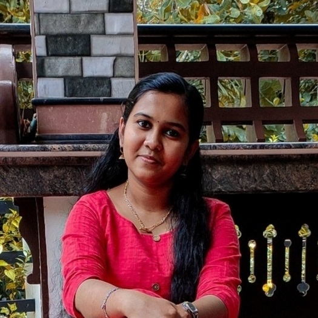
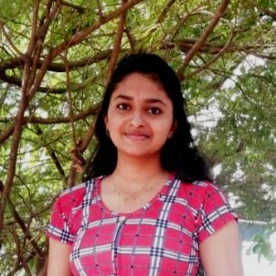

- I am the type of person who is always keen on improving myself every day in all aspects. I am focused on improving my coding skills as well as developing my interpersonal skills and ability to work in a team.
- According to me, the most important benefit of being a part of SheHacks, a TinkerHub WIT initiative is that I can collaborate and work with a team to learn and build a project. Being included in a team to build a project provides a great opportunity for working together synergistically towards the accomplishment of a common goal.
- I strongly believe that through this process, I can learn to effectively utilize time, improve cooperation, commitment and try to manage conflicts that may occur.
- Most importantly, I appreciate Tinkerhub WIT for their valuable initiative towards encouraging girls to enhance their skills.
MEMBERS

Meenakshi Manoj
College of Engineering Chengannur

Akhi P Venu
College of Engineering Chengannur
